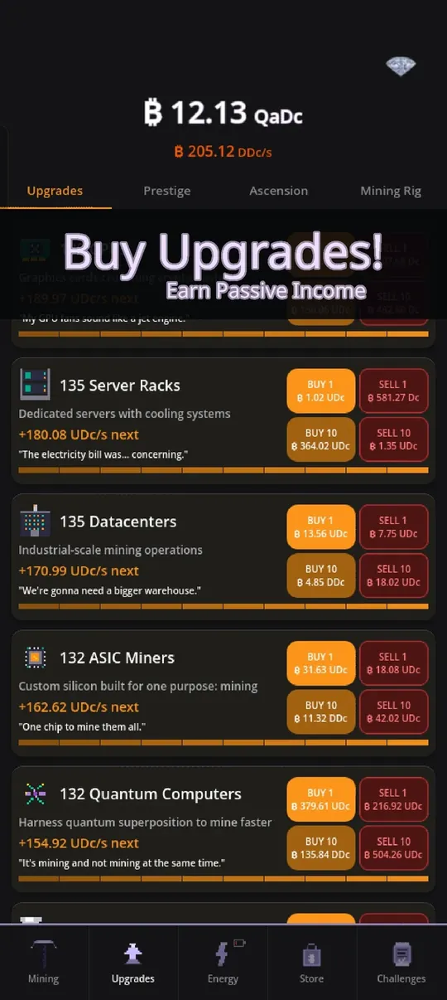

If you just installed Crypto Mining Tycoon and stare at a pickaxe and a pile of upgrades, these Crypto Mining Tycoon beginner tips will save you some wasted taps. I am Maurice, the solo developer, and the first hour of an idle game decides whether it clicks, so here is what I would tell a friend sitting next to me. Crypto Mining Tycoon is a game about an imaginary mining empire. No real money or real crypto is involved. You can get it on Google Play.
Tip 1: Tap in bursts to build the combo
Tapping the pickaxe is not just a warm-up before the passive income kicks in. Every quick tap raises a combo counter, and the combo gives a multiplier on what each tap earns. The multiplier starts once you pass 10 taps and then climbs fast: roughly 1.8x around 100 taps, about 2.8x around 500 and about 3.5x at 1000, with a hard cap at 10x. Long streaks beat slow tapping.

Some taps also land as critical hits, which pay 50 times the normal value, so a short tapping session at the start of each visit is worth it. Later on you can automate part of this, which I cover in the is it worth playing article.
Tip 2: Spend coins on upgrades early and often
Open the Upgrades tab and buy the cheapest rig you can afford. The list starts at GPU rigs and climbs through Server Racks, Datacenters, ASIC Miners and Quantum Computers, with many more tiers further up. Each row shows what the next unit gives you ("+180.08 UDc/s next"), so you can compare at a glance.

A few details that help in practice:
- Buying more of one tier makes that tier stronger, but with diminishing returns the higher the tier is.
- Every unit you own adds a small bonus to your total income, and each unit of a tier also boosts the tier above it.
- Buy 10 saves you ten separate taps on the button, and you can sell units if you ever need to rebalance.
The practical rule: do not hoard coins. Idle income compounds, so coins sitting in your wallet earn nothing.
Tip 3: Do the daily, weekly and monthly challenges
The Challenges tab has three daily challenges, three weekly ones and one monthly one. They ask for things you do anyway, such as tapping a number of times, reaching a combo or spending energy, and they pay coin rewards.

Check in once a day, claim what is done and glance at what is nearly done. A timer at the bottom of the mining screen shows when the daily, weekly and monthly sets reset.
Tip 4: Learn the Energy tab before you need it
Energy is a second system that sits next to your coins. You start with a Hamster Wheel as your power plant, and better plants unlock as you buy upgrades and prestige. Plants give you energy regeneration and a capacity, and you spend energy on modes and bursts that boost your income. It looks complicated at first, so my advice is to switch on one mode that boosts income and watch what happens. The full picture is in how to progress faster.
Tip 5: Prestige when the next level is within reach
Prestige resets your run for a permanent multiplier. The first one costs 1 billion coins, and each level costs about 10 times more than the last (a little less at higher levels). The game shows the next level and the next milestone as progress bars, so you always know how far away you are. A good beginner habit: prestige when the screen says it is available and the gain is clearly bigger than your current multiplier, then rebuild quickly. The whole system is explained in prestige and ascension explained.
Tip 6: Let the game work while you are away
Crypto Mining Tycoon pays offline earnings. By default you can collect up to 12 hours of income when you come back, and a popup lets you collect it. Plan your sessions around that: spend everything on upgrades before you close the app, and you will return to more.
Quick checklist for your first session
- Tap in streaks to push the combo.
- Spend all coins on upgrades before leaving.
- Claim finished challenges.
- Try one energy mode.
- Aim for your first prestige and note the milestone bar.
Common beginner mistakes
- Saving coins for a big purchase. Income compounds when you reinvest it, so waiting rarely pays off in the early game.
- Ignoring the sell buttons. You can sell units, which is handy if you want to rebalance between tiers, but it is not something you need often.
- Skipping the popups. The game explains new systems when they unlock, and the small "?" buttons show details such as drop rates and multiplier breakdowns.
- Rushing every system at once. Energy, artifacts and research all unlock in layers. You do not need to understand all of them on day one.
Another small habit: the top of the screen always shows your coin total and your income per second. Watching that second number after each purchase is the quickest way to learn which upgrades matter. When you want to go deeper, idle clicker games explained describes the genre loop, and the progress guide shows which systems to add next.
Try it
The game is free to download and has 12 languages. Install Crypto Mining Tycoon from Google Play and put these tips to work. If something is unclear, the in-game Support chat reaches me directly.
Frequently Asked Questions
How does the combo work in Crypto Mining Tycoon?
Quick taps raise a combo counter. The multiplier starts after 10 taps, reaches about 1.8x at 100 and 3.5x at 1000, and is capped at 10x. Critical hits pay 50 times a normal tap.
How much offline income can I collect?
By default you can collect up to 12 hours of offline income when you return. Some store items, such as the Offline Vault and the Whale Card, raise that limit to 24 hours.
When should I do my first prestige?
The first prestige needs 1 billion coins. Press it when the Prestige tab shows the gain is clearly larger than your current multiplier, then rebuild. Later levels cost roughly 10 times more each.